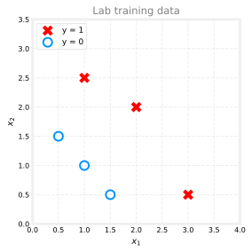
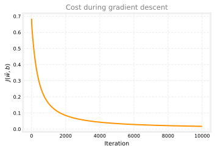
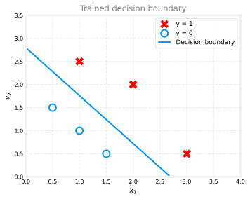

import copy
import math
import numpy as np
import matplotlib.pyplot as plt
plt.style.use("../../deeplearning.mplstyle")
dlblue = "#0096ff"
X_train = np.array([[0.5, 1.5], [1.0, 1.0], [1.5, 0.5], [3.0, 0.5], [2.0, 2.0], [1.0, 2.5]])
y_train = np.array([0, 0, 0, 1, 1, 1])
def plot_data(X, y, ax):
pos = y.reshape(-1) == 1
neg = y.reshape(-1) == 0
ax.scatter(X[pos, 0], X[pos, 1], marker="x", s=80, c="red", label="y = 1")
ax.scatter(X[neg, 0], X[neg, 1], marker="o", s=100, facecolors="none",
edgecolors=dlblue, linewidths=2, label="y = 0")
ax.legend(loc="upper left", fontsize=9)
def sigmoid(z):
return 1.0 / (1.0 + np.exp(-np.clip(z, -500, 500)))
def compute_cost_logistic(X, y, w, b):
m = X.shape[0]
cost = 0.0
for i in range(m):
f_wb_i = sigmoid(np.dot(X[i], w) + b)
cost += -y[i] * np.log(f_wb_i) - (1 - y[i]) * np.log(1 - f_wb_i)
return cost / mGradient Descent for Logistic Regression
machine-learning
supervised-learning
classification
You now have the logistic regression model and the log loss cost function. The remaining step is to fit the parameters and by minimizing that cost. The…
You now have the logistic regression model and the log loss cost function. The remaining step is to fit the parameters \(\vec{w}\) and \(b\) by minimizing that cost. The standard tool is gradient descent, the same optimization method you used for linear regression.
Review Questions
1. What are you trying to find when you “train” logistic regression?
TipAnswer
Values of \(\vec{w}\) and \(b\) that minimize the logistic regression cost \(J(\vec{w}, b)\) on the training data.
Training Goal
To fit a logistic regression model, search for \(\vec{w}\) and \(b\) that minimize
\[ J(\vec{w}, b) = -\frac{1}{m} \sum_{i=1}^{m} \Big[ y^{(i)} \log f_{\vec{w},b}(\vec{x}^{(i)}) + \big(1 - y^{(i)}\big)\log\big(1 - f_{\vec{w},b}(\vec{x}^{(i)})\big) \Big] \]
where
\[ f_{\vec{w},b}(\vec{x}) = g(\vec{w} \cdot \vec{x} + b) \]
and \(g\) is the sigmoid function.
Once you have good parameters, you can use the model on new inputs. For a new patient with tumor size, age, and other features \(\vec{x}\), the model estimates \(P(y = 1 \mid \vec{x})\) and supports a diagnosis.
Review Questions
1. After training, what does \(f_{\vec{w},b}(\vec{x})\) represent for a new example?
TipAnswer
The model’s estimate of \(P(y = 1 \mid \vec{x})\), interpreted as the probability that the label is 1.
Gradient Descent Algorithm
Gradient descent repeatedly nudges each parameter in the direction that reduces the cost. For any weight \(w_j\),
\[ w_j \leftarrow w_j - \alpha \frac{\partial}{\partial w_j} J(\vec{w}, b) \]
and for the bias,
\[ b \leftarrow b - \alpha \frac{\partial}{\partial b} J(\vec{w}, b) \]
Here \(\alpha\) is the learning rate. The algorithm keeps updating until the cost stops decreasing meaningfully or you reach a fixed number of iterations.
Review Questions
1. What role does the learning rate \(\alpha\) play in each update step?
TipAnswer
It scales how large each parameter change is. A bigger \(\alpha\) takes bigger steps; a smaller \(\alpha\) takes smaller, more cautious steps.
Derivatives of Logistic Cost
If you apply calculus to the log loss cost above, the derivatives take a compact form. For each feature index \(j = 1, \ldots, n\),
\[ \frac{\partial J(\vec{w}, b)}{\partial w_j} = \frac{1}{m} \sum_{i=1}^{m} \left(f_{\vec{w},b}(\vec{x}^{(i)}) - y^{(i)}\right) x_j^{(i)} \]
For the bias,
\[ \frac{\partial J(\vec{w}, b)}{\partial b} = \frac{1}{m} \sum_{i=1}^{m} \left(f_{\vec{w},b}(\vec{x}^{(i)}) - y^{(i)}\right) \]
In both formulas, \(f_{\vec{w},b}(\vec{x}^{(i)}) - y^{(i)}\) is the prediction error on example \(i\). The derivative for \(w_j\) also multiplies by the matching feature \(x_j^{(i)}\). The derivative for \(b\) does not include a feature term.
NoteWhere do these formulas come from?
The algebra chains the derivative of the log loss through the sigmoid. The result is the same shape as the squared-error derivatives for linear regression, but \(f_{\vec{w},b}\) is now the sigmoid output, not a linear prediction.
Review Questions
1. What is the extra factor in \(\partial J / \partial w_j\) that is missing from \(\partial J / \partial b\)?
TipAnswer
The feature value \(x_j^{(i)}\) for each training example. The bias derivative averages only the errors \((f - y)\).
1. How many weight update rules do you need when the model has \(n\) features?
TipAnswer
\(n\), one update for each \(w_j\) where \(j = 1, \ldots, n\), plus one update for \(b\).
Full Update Rules
Plug the derivatives into the gradient descent template. One iteration looks like this.
\[ \text{repeat until convergence: } \begin{cases} w_j \leftarrow w_j - \alpha \dfrac{1}{m}\displaystyle\sum_{i=1}^{m}\left(f_{\vec{w},b}(\vec{x}^{(i)}) - y^{(i)}\right) x_j^{(i)} & \text{for } j = 1, \ldots, n \\[10pt] b \leftarrow b - \alpha \dfrac{1}{m}\displaystyle\sum_{i=1}^{m}\left(f_{\vec{w},b}(\vec{x}^{(i)}) - y^{(i)}\right) \end{cases} \]
On each iteration, compute \(f_{\vec{w},b}(\vec{x}^{(i)})\) with the current \(\vec{w}\) and \(b\), form the errors, then update all parameters.
Review Questions
1. Before updating \(w_j\), which values of \(\vec{w}\) and \(b\) should you use inside \(f_{\vec{w},b}(\vec{x}^{(i)})\)?
TipAnswer
The current values from the start of that iteration, before any updates are applied.
Same Formulas, Different Model
If you just finished gradient descent for multiple linear regression, you might do a double take here. The update rules on the previous section look like the same recipe.
For each weight \(w_j\) you still subtract \(\alpha\) times a derivative. That derivative still has the shape “average of \((f - y)\) times a feature.” For \(b\) you still subtract \(\alpha\) times the average of \((f - y)\). The error term is still
\[ f_{\vec{w},b}(\vec{x}^{(i)}) - y^{(i)}, \]
and each \(w_j\) update still uses the matching feature \(x_j^{(i)}\).
So you might reasonably ask, “Wait. Is logistic regression secretly the same as linear regression? Did we just learn the same algorithm twice?”
That is a fair question. Andrew Ng calls this out directly in the lecture. The two update blocks look the same on paper. But they are not the same algorithm, because the symbol \(f_{\vec{w},b}\) means something different in each case.
In linear regression, the model output is a straight-line prediction. In logistic regression, the model output is a sigmoid probability. Same letters in the update formula, different function plugged in.
| Setting | Model output \(f_{\vec{w},b}(\vec{x})\) |
|---|---|
| Linear regression | \(\vec{w} \cdot \vec{x} + b\) |
| Logistic regression | \(\dfrac{1}{1 + e^{-(\vec{w} \cdot \vec{x} + b)}}\) |
Think of the update rules as a template and \(f_{\vec{w},b}\) as the engine inside that template.
- Linear regression engine: predict a number directly with \(\vec{w} \cdot \vec{x} + b\).
- Logistic regression engine: plug \(\vec{w} \cdot \vec{x} + b\) into \(\dfrac{1}{1 + e^{-(\vec{w} \cdot \vec{x} + b)}}\) so the output stays between 0 and 1.
That one change is why linear regression is used for predicting amounts (house prices, dosages) while logistic regression is used for yes/no classification (malignant vs benign, spam vs not spam). The gradient descent machinery is shared. The model inside \(f\) is not.
Review Questions
1. True or false? Logistic regression and linear regression use the same definition of \(f_{\vec{w},b}(\vec{x})\).
TipAnswer
False. Linear regression uses a linear output. Logistic regression applies the sigmoid to \(\vec{w} \cdot \vec{x} + b\).
1. If the update formulas look the same, what must you check to know which algorithm you are running?
TipAnswer
How \(f_{\vec{w},b}(\vec{x})\) is computed. Linear uses \(\vec{w} \cdot \vec{x} + b\) directly; logistic uses \(\dfrac{1}{1 + e^{-(\vec{w} \cdot \vec{x} + b)}}\).
Simultaneous Updates
As with linear regression, update all parameters simultaneously. Compute every new \(w_j\) and the new \(b\) from the current values, then assign them together. Do not update \(w_1\) and then use that new \(w_1\) while computing the update for \(w_2\).
See the gradient descent page for a side-by-side comparison of correct simultaneous updates versus updating one parameter at a time.
Review Questions
1. Why can sequential (one-at-a-time) updates give wrong results?
TipAnswer
Later updates would use already-changed parameter values, so the derivatives no longer match the intended simultaneous gradient step.
Monitoring Convergence
You can monitor logistic regression training the same way you monitored linear regression. Plot the cost \(J(\vec{w}, b)\) after each iteration and check that it trends downward and eventually levels off.
If the curve looks wrong (cost increases, flatlines too early, or oscillates), use the debugging workflow on Checking Convergence and Choosing Learning Rate. The same learning-rate guidance applies here.
Review Questions
1. What should a healthy training cost curve do over iterations?
TipAnswer
It should generally decrease and then level off as gradient descent approaches a low-cost region.
Vectorization
The update rules above are written one weight at a time. In code, you can implement the same math with vectorization so NumPy handles whole arrays at once. That often runs much faster than explicit Python loops.
This page focuses on the math behind one iteration. The lab at the end of this page implements the gradient and training loop in code.
Review Questions
1. What is the main practical benefit of a vectorized gradient descent implementation?
TipAnswer
Speed. Array operations in NumPy can replace many per-example loops and train the model faster.
Feature Scaling
Feature scaling helps gradient descent for logistic regression the same way it helps linear regression. When features live on very different scales (for example, age in tens and income in thousands), contours of the cost become elongated and gradient descent can zigzag slowly.
Rescaling features to comparable ranges (often near \(-1\) to \(+1\)) can speed up convergence for logistic regression as well.
Review Questions
1. Does feature scaling change the logistic regression model you want in theory?
TipAnswer
No. It is a training trick that helps gradient descent find good parameters faster. It does not change the underlying sigmoid model.
Lab: Gradient Descent and Scikit-Learn
In this lab you will train logistic regression twice on the same small data set. First you will implement gradient descent yourself (gradient, update loop, cost curve, decision boundary). Then you will train the same data with scikit-learn, a library many practitioners use in industry.
Goals
In this lab, you will:
- implement
compute_gradient_logisticand check it on a test point - implement
gradient_descentand run it on a two-feature data set - plot the cost over iterations and the learned decision boundary
- fit the same data with
sklearn.linear_model.LogisticRegressionand check accuracy
Dataset
The training set matches the decision boundary and cost function labs. Six examples, two features per row, labels 0 or 1.

Implement Gradient
The gradient formulas from the lecture translate directly into a loop. For each example, compute the sigmoid prediction, form the error \(f_{\vec{w},b}(\vec{x}^{(i)}) - y^{(i)}\), and accumulate contributions to dj_dw and dj_db.
def compute_gradient_logistic(X, y, w, b):
m, n = X.shape
dj_dw = np.zeros((n,))
dj_db = 0.0
for i in range(m):
f_wb_i = sigmoid(np.dot(X[i], w) + b)
err_i = f_wb_i - y[i]
for j in range(n):
dj_dw[j] = dj_dw[j] + err_i * X[i, j]
dj_db = dj_db + err_i
dj_dw = dj_dw / m
dj_db = dj_db / m
return dj_db, dj_dwCheck Gradient
Test the function at \(\vec{w} = [2, 3]\) and \(b = 1\).
w_tmp = np.array([2.0, 3.0])
b_tmp = 1.0
dj_db_tmp, dj_dw_tmp = compute_gradient_logistic(X_train, y_train, w_tmp, b_tmp)
print(f"dj_db: {dj_db_tmp}")
print(f"dj_dw: {dj_dw_tmp.tolist()}")dj_db: 0.49861806546328574
dj_dw: [0.498333393278696, 0.49883942983996693]You should see dj_db near 0.4986 and dj_dw near [0.4983, 0.4988].
Implement Gradient Descent
Now wrap the gradient in a training loop. Start from initial parameters, repeat the update for num_iters steps, and record the cost after each iteration so you can plot a learning curve later.
def gradient_descent(X, y, w_in, b_in, alpha, num_iters):
J_history = []
w = copy.deepcopy(w_in)
b = b_in
for i in range(num_iters):
dj_db, dj_dw = compute_gradient_logistic(X, y, w, b)
w = w - alpha * dj_dw
b = b - alpha * dj_db
if i < 100000:
J_history.append(compute_cost_logistic(X, y, w, b))
if i % math.ceil(num_iters / 10) == 0:
print(f"Iteration {i:4d}: Cost {J_history[-1]}")
return w, b, J_historyRun Gradient Descent
Train from \(\vec{w} = [0, 0]\) and \(b = 0\) with learning rate \(\alpha = 0.1\) for 10,000 iterations.
w_init = np.zeros_like(X_train[0])
b_init = 0.0
alpha = 0.1
num_iters = 10000
w_out, b_out, J_hist = gradient_descent(X_train, y_train, w_init, b_init, alpha, num_iters)
print(f"\nUpdated parameters: w = {w_out}, b = {b_out}")Iteration 0: Cost 0.684610468560574
Iteration 1000: Cost 0.1590977666870456
Iteration 2000: Cost 0.08460064176930081
Iteration 3000: Cost 0.05705327279402531
Iteration 4000: Cost 0.042907594216820076
Iteration 5000: Cost 0.034338477298845684
Iteration 6000: Cost 0.028603798022120097
Iteration 7000: Cost 0.024501569608793
Iteration 8000: Cost 0.02142370332569295
Iteration 9000: Cost 0.019030137124109114
Updated parameters: w = [5.28123029 5.07815608], b = -14.222409982019837The cost should fall steadily. Final parameters are typically near \(\vec{w} \approx [5.28, 5.08]\) and \(b \approx -14.22\) on this data set.
Plot Learning Curve
Each entry in J_hist is the cost after one full pass through the update rules. A downward curve means gradient descent is doing its job.

Plot Decision Boundary
The line below is where \(\vec{w} \cdot \vec{x} + b = 0\) for the trained parameters. Points on one side get \(f_{\vec{w},b}(\vec{x}) > 0.5\) (predict \(\hat{y} = 1\)); points on the other side get \(\hat{y} = 0\).
fig, ax = plt.subplots(figsize=(5, 4))
plot_data(X_train, y_train, ax)
x1_boundary = -b_out / w_out[0]
x2_boundary = -b_out / w_out[1]
ax.plot([0, x1_boundary], [x2_boundary, 0], color=dlblue, linewidth=2, label="Decision boundary")
ax.axis([0, 4, 0, 3.5])
ax.set_xlabel("$x_1$")
ax.set_ylabel("$x_2$")
ax.set_title("Trained decision boundary", color="gray")
ax.legend(loc="upper right", fontsize=9)
ax.grid(linestyle="--", alpha=0.35)
plt.tight_layout()
plt.show()
Train with Scikit-Learn
The same data set can be trained in a few lines with scikit-learn. Many teams use this library daily because it wraps training, prediction, and scoring behind a simple API.
from sklearn.linear_model import LogisticRegression
lr_model = LogisticRegression()
lr_model.fit(X_train, y_train)
print("Training complete.")
print(f"Weights: {lr_model.coef_[0]}")
print(f"Bias: {lr_model.intercept_[0]:.4f}")Training complete.
Weights: [0.90411349 0.73587543]
Bias: -2.3337We end the cell with print instead of leaving fit as the last line. That avoids scikit-learn’s HTML parameter table, which is built for Jupyter and often looks squeezed on this page.
Predictions and Accuracy
predict returns class labels (0 or 1) for each row. score reports the fraction of training examples classified correctly.
y_pred = lr_model.predict(X_train)
print("Predictions on training set:", y_pred)
print("Accuracy on training set:", lr_model.score(X_train, y_train))Predictions on training set: [0 0 0 1 1 1]
Accuracy on training set: 1.0On this tiny, cleanly separated data set you should see accuracy 1.0 (every training label matched). The internal coefficients may differ from your hand-tuned \(\vec{w}\) and \(b\) because scikit-learn uses its own optimization and default regularization, but the decision boundary can still separate the points perfectly.
Review Questions
1. Why might scikit-learn parameters differ from your gradient descent output even when both models classify the training data correctly?
TipAnswer
They use different solvers and scikit-learn applies default regularization. What matters for classification is that both find a boundary that fits the labels, not that every numeric weight matches exactly.